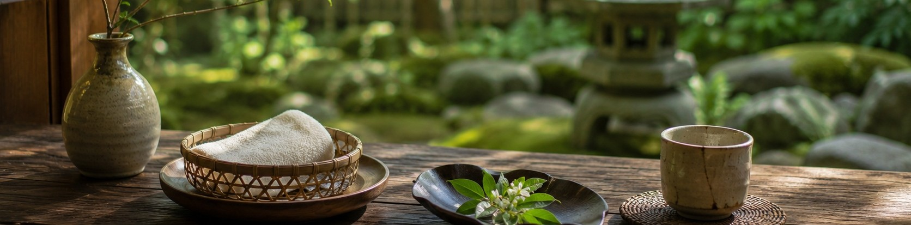
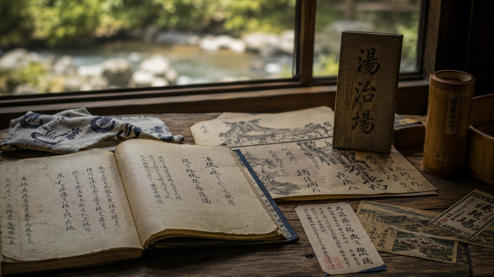

研究所の発信
湯治・未病の知識
歴史・思想・暮らしの知恵
 湯の花 ― 温泉が長い時間をかけて生み出す結晶
湯の花 ― 温泉が長い時間をかけて生み出す結晶
湯治の歴史、未病の思想、入浴と暮らしの知恵を、温泉研究所の視点でお伝えします。
数値や統計ではなく、先人から伝わる言葉と経験を、現代の暮らしに引き寄せながら読み解いていきます。
歴 史

湯治とは何か ― 日本古来の「整える」文化
現代では旅行や娯楽として捉えられがちな温泉ですが、湯治にはもともと別の意味がありました。江戸の頃から続く湯治場の記録を手がかりに、その本来の姿を読み解きます。
読む
思 想

「未病」という思想 ― 病気になる前に整える
「未病」という言葉は、東洋医学に古くから伝わる概念です。冷え、疲労、眠りの浅さなど、病名のつかない不調に向き合うための知恵として、今あらためて注目されています。
読む
日々の習慣

毎日の入浴を「湯治」にする ― 家庭でできる習慣の話
温泉地まで行かなくても、日々の入浴を「整える時間」として丁寧に扱うことができます。湯治の考え方を日常に取り入れるための、基本的な視点をご紹介します。
読む
文 化

湯治場の言葉 ― 温泉地に伝わる風習と言い伝え
各地の温泉地には、入浴の作法や禁忌、季節ごとの湯の使い方など、長年の経験が積み重なった言い伝えが残っています。数値ではなく言葉として伝わってきた知恵の断片を集めます。
読む
今日の視点
都市に広がる「湯」の空間 ― 伝統の視点から見直す
近年、都心の再開発でも温泉にまつわる空間づくりが進んでいると報じられています。この流れを、市場データとしてではなく、湯治の文化という視点から読み解いてみます。
読む※ 記事は随時追加していきます。